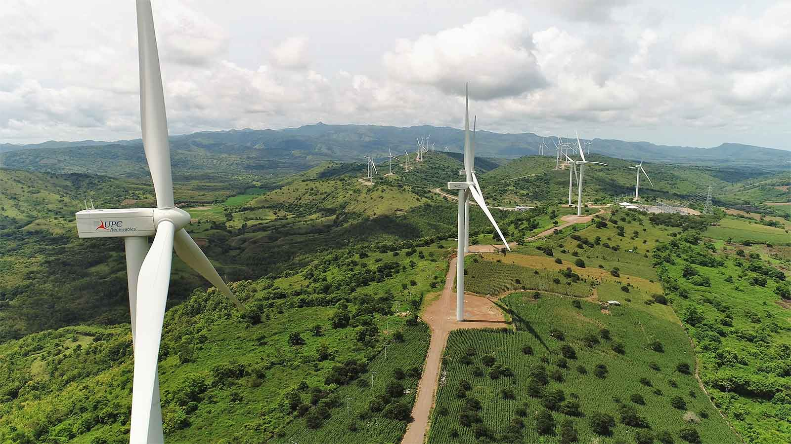
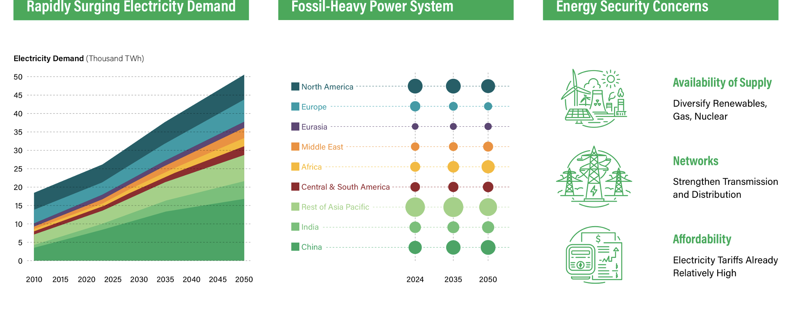

The first regional platform for peer learning on the sustainable energy transition in East Asia and the Pacific. Three days in Bali, bringing together ministers, utilities, and global partners to turn ambition into delivery.

June 3 to 5, 2026
Central Indonesia Time (WITA, GMT+8)
Invitation-only.
In the News
A short, curated read of recent developments shaping the Forum agenda — project milestones, regional initiatives, and the policy and investment signals reshaping power systems across East Asia and the Pacific.
A joint financing platform with the ASEAN Secretariat and ACE to accelerate cross-border interconnection.
ASEAN SecretariatA proof point that multilateral power trade is moving from MoU to megawatt-hours — ahead of the APG Financing Initiative ramp.
Energy Market Authority Singapore · April 2026Consultation draft sets common settlement rules for multilateral trades, building on the Enhanced APG MoU.
ASEAN Centre for Energy · March 2026A new chapter for sub-regional power trade in Malaysia — an early proof point for the broader APG vision.
Sarawak Energy · January 2026 · TransmissionCapacity spread across Java, Kalimantan, Sulawesi, Sumatra, and eastern Indonesia — targeted for commercial operation by 2029.
pv magazine · May 2026 · GenerationUtility-scale storage and green mini-grids on the outer islands — one of seven SIDS in the program.
Green Climate Fund · DistributionData centers as generators, fiber and 5G as transmission — new AI-ready capacity scheduled online in H2 2026.
TechWire AsiaOne of the largest single-country cloud and AI infrastructure commitments in EAP — with explicit 24/7 carbon-free energy targets.
Microsoft News · April 2026Data centre electricity demand could double by 2030, with Asia accounting for nearly half of new load — reshaping system-planning assumptions.
International Energy Agency · February 2026A reference framing for the next phase of multilateral cooperation, ahead of the Forum’s session on cross-border interconnection.
International Energy AgencyA new EAP financing gap analysis covering Fiji, Kiribati, RMI, FSM, Tonga, Tuvalu, and Vanuatu — with mini-grid pathways front and centre.
ESMAP / World Bank · March 2026The flagship outlook flags grid investment, regional power trade, and storage as the binding constraints for the next decade.
Asian Development Bank · April 2026EAP’s Energy Context

Six Core Themes
Scaling solar and wind across EAP.
View session ›The ASEAN Power Grid vision and cross-border interconnection.
View session ›Global technology and policy trends in the EAP context.
View session ›The renewable-ready utility of the future.
View session ›Cost-effective technologies for Small Island Developing States.
View session ›A Central Feature
The formal launch of regional Communities of Practice is designed to sustain peer exchange and technical collaboration long after the Forum closes. The CoPs connect participants to a permanent network of utility professionals, grid operators, and technical experts, organized around the themes that matter most to their work.
Read more about the CoPsConvening Partners
Convened by the World Bank Group with support from the Energy Sector Management Assistance Program and a coalition of international partners that bring complementary expertise across renewable energy integration, grid modernization, regional power trade, and industrial decarbonization.
World Bank Group · Energy Sector Management Assistance Program · International Finance Corporation · Multilateral Investment Guarantee Agency
International Energy Agency · International Renewable Energy Agency · Lawrence Berkeley National Laboratory
Asian Development Bank · ASEAN Centre for Energy · International Solar Alliance